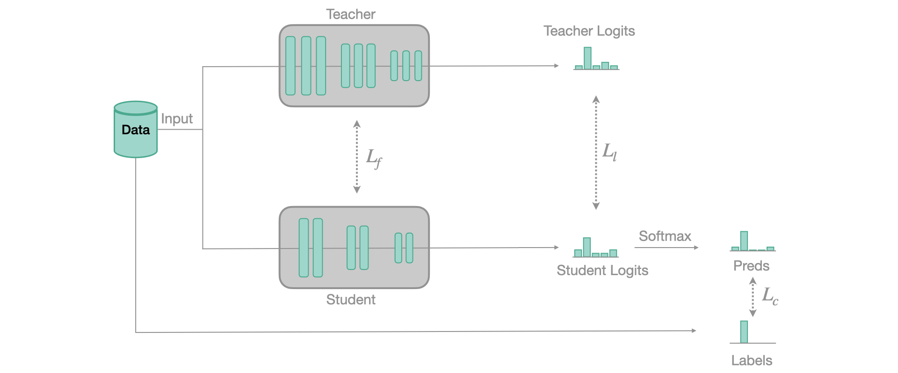
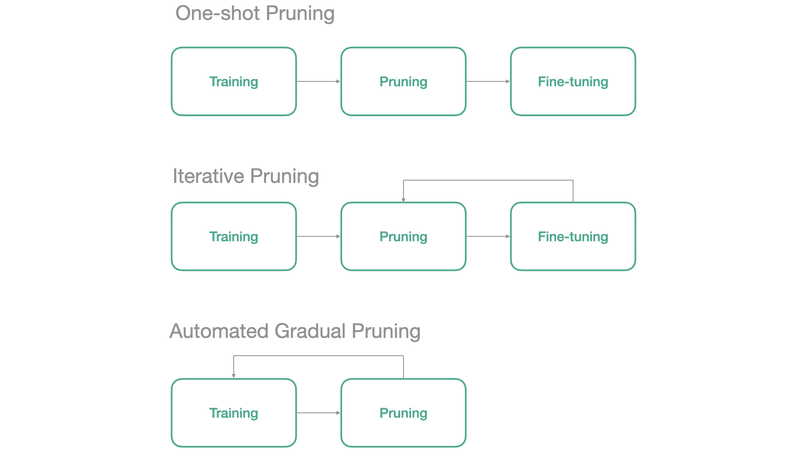
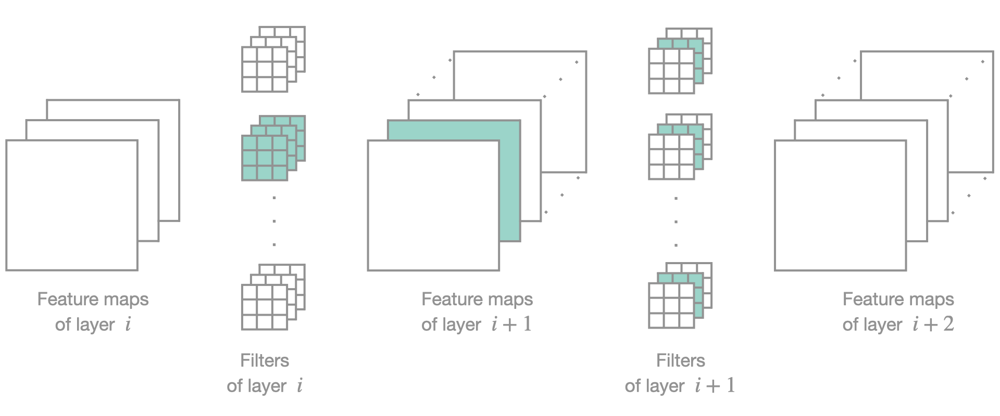
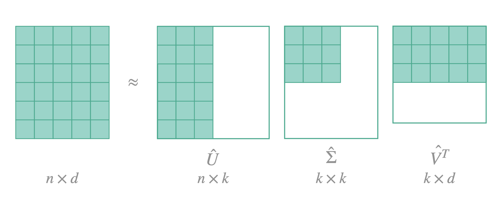

size, bs = 128, 32
dls = get_dls(size, bs)Walkthrough
Walkthrough
Let’s start with a bit of context for the purpose of the demonstration. Imagine that we want to deploy a VGG16 model on a mobile device that has limited storage capacity and that our task requires our model to run sufficiently fast. It is known that parameters and speed efficiency are not the strong points of VGG16 but let’s see what we can do with it.
Let’s first check the number of parameters and the inference time of VGG16.
learn = Learner(dls, models.vgg16_bn(num_classes=10), metrics=[accuracy])num_parameters = get_num_parameters(learn.model)
disk_size = get_model_size(learn.model)
print(f"Model Size: {disk_size / 1e6:.2f} MB (disk), {num_parameters} parameters")Model Size: 537.30 MB (disk), 134309962 parametersSo our model has 134 millions parameters and needs 537MB of disk space in order to be stored
model = learn.model.eval().to('cpu')
x,y = dls.one_batch()print(f'Inference Speed: {evaluate_cpu_speed(learn.model, x[0][None])[0]:.2f}ms')Inference Speed: 80.86msAnd it takes 26ms to perform inference on a single image.
Snap ! This is more than we can afford for deployment, ideally we would like our model to take only half of that…but should we give up ? Nope, there are actually a lot of techniques that we can use to help reducing the size and improve the speed of our models! Let’s see how to apply them with FasterAI.
We will first train our VGG16 model to have a baseline of what performance we should expect from it.
learn.fit_one_cycle(10, 1e-4)| epoch | train_loss | valid_loss | accuracy | time |
|---|---|---|---|---|
| 0 | 2.084260 | 1.887413 | 0.333758 | 00:11 |
| 1 | 1.658447 | 1.451500 | 0.524076 | 00:10 |
| 2 | 1.379249 | 1.647492 | 0.514140 | 00:10 |
| 3 | 1.235636 | 1.450754 | 0.536561 | 00:10 |
| 4 | 1.096547 | 0.920276 | 0.708025 | 00:10 |
| 5 | 0.939336 | 0.904787 | 0.713885 | 00:10 |
| 6 | 0.820493 | 0.774724 | 0.752357 | 00:10 |
| 7 | 0.675887 | 0.635337 | 0.791592 | 00:10 |
| 8 | 0.636166 | 0.582814 | 0.811210 | 00:10 |
| 9 | 0.581690 | 0.588991 | 0.811720 | 00:10 |
So we would like our network to have comparable accuracy but fewer parameters and running faster… And the first technique that we will show how to use is called Knowledge Distillation
Knowledge Distillation
Knowledge distillation is a simple yet very efficient way to train a model. It was introduced in 2006 by Caruana et al.. The main idea behind is to use a small model (called the student) to approximate the function learned by a larger and high-performing model (called the teacher). This can be done by using the large model to pseudo-label the data. This idea has been used very recently to break the state-of-the-art accuracy on ImageNet.
When we train our model for classification, we usually use a softmax as last layer. This softmax has the particularity to squish low value logits towards 0, and the highest logit towards 1. This has for effect to completely lose all the inter-class information, or what is sometimes called the dark knowledge. This is the information that is valuable and that we want to transfer from the teacher to the student.
To do so, we still use a regular classification loss but at the same time, we’ll use another loss, computed between the softened logits of the teacher (our soft labels) and the softened logits of the student (our soft predictions). Those soft values are obtained when you use a soft-softmax, that avoids squishing the values at its output. Our implementation follows this paper and the basic principle of training is represented in the figure below:

To use Knowledge Distillation with FasterAI, you only need to use this callback when training your student model:
KnowledgeDistillation(teacher.model, loss)You only need to give to the callback function your teacher learner. Behind the scenes, FasterAI will take care of making your model train using knowledge distillation.
from fasterai.distill.all import *The first thing to do is to find a teacher, which can be any model, that preferrably performs well. We will chose VGG19 for our demonstration. To make sure it performs better than our VGG16 model, let’s start from a pretrained version.
teacher = vision_learner(dls, models.vgg19_bn, metrics=[accuracy])
teacher.fit_one_cycle(3, 1e-4)| epoch | train_loss | valid_loss | accuracy | time |
|---|---|---|---|---|
| 0 | 0.941329 | 0.353027 | 0.896051 | 00:06 |
| 1 | 0.467530 | 0.222822 | 0.929936 | 00:06 |
| 2 | 0.443237 | 0.213563 | 0.935032 | 00:06 |
Our teacher has 94% of accuracy which is pretty good, it is ready to take a student under its wing. So let’s create our student model and train it with the Knowledge Distillation callback:
student = Learner(dls, models.vgg16_bn(num_classes=10), metrics=[accuracy])
kd_cb = KnowledgeDistillationCallback(teacher.model, SoftTarget)
student.fit_one_cycle(10, 1e-4, cbs=kd_cb)| epoch | train_loss | valid_loss | accuracy | time |
|---|---|---|---|---|
| 0 | 5.864407 | 5.476386 | 0.411465 | 00:16 |
| 1 | 4.312775 | 5.342780 | 0.501911 | 00:16 |
| 2 | 3.596799 | 4.517756 | 0.507006 | 00:16 |
| 3 | 3.102537 | 3.239754 | 0.644841 | 00:16 |
| 4 | 2.596609 | 2.465116 | 0.717707 | 00:16 |
| 5 | 2.418236 | 2.516353 | 0.702420 | 00:16 |
| 6 | 2.024942 | 2.050347 | 0.771465 | 00:16 |
| 7 | 1.850588 | 1.784052 | 0.803567 | 00:16 |
| 8 | 1.625190 | 1.574969 | 0.818089 | 00:16 |
| 9 | 1.565640 | 1.578238 | 0.813758 | 00:16 |
And we can see that indeed, the knowledge of the teacher was useful for the student, as it is clearly overperforming the vanilla VGG16.
Ok, so now we are able to get more from a given model which is kind of cool ! With some experimentations we could come up with a model smaller than VGG16 but able to reach the same performance as our baseline! You can try to find it by yourself later, but for now let’s continue with the next technique !
Sparsifying
Now that we have a student model that is performing better than our baseline, we have some room to compress it. And we’ll start by making the network sparse. As explained in a previous article, there are many ways leading to a sparse network.
Note
Usually, the process of making a network sparse is called Pruning. I prefer using the term Pruning when parameters are actually removed from the network, which we will do in the next section.

By default, FasterAI uses the Automated Gradual Pruning paradigm as it removes parameters as the model trains and doesn’t require to pretrain the model, so it is usually much faster. In FasterAI, this is also managed by using a callback, that will replace the least important parameters of your model by zeroes during the training. The callback has a wide variety of parameters to tune your Sparsifying operation, let’s take a look at them:
SparsifyCallback(learn, sparsity, granularity, context, criteria, schedule)
- sparsity: the percentage of sparsity that you want in your network
- granularity: on what granularity you want the sparsification to be operated
- context: either
localorglobal, will affect the selection of parameters to be choosen in each layer independently (local) or on the whole network (global).- criteria: the criteria used to select which parameters to remove (currently supported:
l1,taylor)- schedule: which schedule you want to follow for the sparsification (currently supported: any scheduling function of fastai, i.e
linear,cosine, … andgradual, common schedules such as One-Shot, Iterative or Automated Gradual)
But let’s come back to our example!
Here, we will make our network 40% sparse, and remove entire filters, selected locally and based on L1 norm. We will train with a learning rate a bit smaller to be gentle with our network because it has already been trained. The scheduling selected is cosinusoidal, so the pruning starts and ends quite slowly.
sp_cb = SparsifyCallback(sparsity=50, granularity='filter', context='global', criteria=large_final, schedule=cos)
student.fit(10, 1e-5, cbs=sp_cb)Pruning of filter until a sparsity of 50%
Saving Weights at epoch 0| epoch | train_loss | valid_loss | accuracy | time |
|---|---|---|---|---|
| 0 | 0.590607 | 0.572063 | 0.820637 | 00:11 |
| 1 | 0.621573 | 0.576351 | 0.814522 | 00:11 |
| 2 | 0.569623 | 0.564671 | 0.812229 | 00:11 |
| 3 | 0.575295 | 0.585963 | 0.813503 | 00:11 |
| 4 | 0.557072 | 0.572918 | 0.818599 | 00:11 |
| 5 | 0.565852 | 0.592840 | 0.812229 | 00:11 |
| 6 | 0.621907 | 0.611757 | 0.807389 | 00:11 |
| 7 | 0.656858 | 0.608958 | 0.802803 | 00:11 |
| 8 | 0.624567 | 0.648065 | 0.788535 | 00:11 |
| 9 | 0.620338 | 0.608264 | 0.800255 | 00:11 |
Sparsity at the end of epoch 0: 1.22%
Sparsity at the end of epoch 1: 4.77%
Sparsity at the end of epoch 2: 10.31%
Sparsity at the end of epoch 3: 17.27%
Sparsity at the end of epoch 4: 25.00%
Sparsity at the end of epoch 5: 32.73%
Sparsity at the end of epoch 6: 39.69%
Sparsity at the end of epoch 7: 45.23%
Sparsity at the end of epoch 8: 48.78%
Sparsity at the end of epoch 9: 50.00%
Final Sparsity: 50.00%
Sparsity Report:
--------------------------------------------------------------------------------
Layer Type Params Zeros Sparsity
--------------------------------------------------------------------------------
features.0 Conv2d 1,728 0 0.00%
features.3 Conv2d 36,864 0 0.00%
features.7 Conv2d 73,728 0 0.00%
features.10 Conv2d 147,456 0 0.00%
features.14 Conv2d 294,912 0 0.00%
features.17 Conv2d 589,824 0 0.00%
features.20 Conv2d 589,824 0 0.00%
features.24 Conv2d 1,179,648 755,712 64.06%
features.27 Conv2d 2,359,296 1,700,352 72.07%
features.30 Conv2d 2,359,296 1,714,176 72.66%
features.34 Conv2d 2,359,296 1,612,800 68.36%
features.37 Conv2d 2,359,296 1,529,856 64.84%
features.40 Conv2d 2,359,296 1,663,488 70.51%
--------------------------------------------------------------------------------
Overall all 14,710,464 8,976,384 61.02%Our network now has 50% of its filters composed entirely of zeroes, without even losing accuracy. Obviously, choosing a higher sparsity makes it more difficult for the network to keep a similar accuracy. Other parameters can also widely change the behaviour of our sparsification process. For example choosing a more fine-grained sparsity usually leads to better results but is then more difficult to take advantage of in terms of speed.
Let’s now see how much we gained in terms of speed. Because we removed 50% of convolution filters, we should expect crazy speed-up right ?
print(f'Inference Speed: {evaluate_cpu_speed(student.model, x[0][None])[0]:.2f}ms')Inference Speed: 83.03msWell actually, no. We didn’t remove any parameters, we just replaced some by zeroes, remember? The amount of parameters is still the same:
num_parameters = get_num_parameters(student.model)
disk_size = get_model_size(student.model)
print(f"Model Size: {disk_size / 1e6:.2f} MB (disk), {num_parameters} parameters")Model Size: 537.30 MB (disk), 134309962 parametersWhich leads us to the next section.
Pruning
Why don’t we see any acceleration even though we removed half of the parameters? That’s because natively, our GPU does not know that our matrices are sparse and thus isn’t able to accelerate the computation. The easiest work around, is to physically remove the parameters we zeroed-out. But this operation requires to change the architecture of the network.
This pruning only works if we remove entire filters as it is the only case where we can change the architecture accordingly. Hopefully, sparse computations will soon be available on common deep learning librairies so this section will become useless in the future.
Here is what it looks like with fasterai:

PruneCallback(learn, sparsity, context, criteria, schedule)
- sparsity: the percentage of sparsity that you want in your network
- context: either
localorglobal, will affect the selection of parameters to be choosen in each layer independently (local) or on the whole network (global).- criteria: the criteria used to select which parameters to remove (currently supported:
l1,taylor)- schedule: which schedule you want to follow for the sparsification (currently supported: any scheduling function of fastai, i.e
linear,cosine, … andgradual, common schedules such as One-Shot, Iterative or Automated Gradual)
So in the case of our example, it gives:
from fasterai.prune.all import *Let’s now see what our model is capable of now:
pr_cb = PruneCallback(pruning_ratio=50, context='global', criteria=large_final, schedule=one_cycle)
student.fit(5, 1e-5, cbs=pr_cb)Ignoring output layer: classifier.6
Total ignored layers: 1| epoch | train_loss | valid_loss | accuracy | time |
|---|---|---|---|---|
| 0 | 0.600658 | 0.603180 | 0.802293 | 01:04 |
| 1 | 0.606881 | 0.634970 | 0.804076 | 01:22 |
| 2 | 0.827685 | 0.815733 | 0.803057 | 01:00 |
| 3 | 0.873774 | 0.878398 | 0.803567 | 00:57 |
| 4 | 0.889905 | 0.876898 | 0.803312 | 00:56 |
Sparsity at the end of epoch 0: 1.94%
Sparsity at the end of epoch 1: 19.96%
Sparsity at the end of epoch 2: 45.82%
Sparsity at the end of epoch 3: 49.74%
Sparsity at the end of epoch 4: 50.00%num_parameters = get_num_parameters(student.model)
disk_size = get_model_size(student.model)
print(f"Model Size: {disk_size / 1e6:.2f} MB (disk), {num_parameters} parameters")Model Size: 148.86 MB (disk), 37200724 parametersAnd in terms of speed:
print(f'Inference Speed: {evaluate_cpu_speed(student.model, x[0][None])[0]:.2f}ms')Inference Speed: 53.93msYay ! Now we can talk ! Let’s just double check that our accuracy is unchanged and that we didn’t mess up somewhere:
And there is actually more that we can do ! Let’s keep going !
Batch Normalization Folding
Batch Normalization Folding is a really easy to implement and straightforward idea. The gist is that batch normalization is nothing more than a normalization of the input data at each layer. Moreover, at inference time, the batch statistics used for this normalization are fixed. We can thus incorporate the normalization process directly in the convolution by changing its weights and completely remove the batch normalization layers, which is a gain both in terms of parameters and in terms of computations. For a more in-depth explaination, see this blog post.
This is how to use it with FasterAI:
bn_folder = BN_Folder() bn_folder.fold(learn.model))Again, you only need to pass your model and FasterAI takes care of the rest. For models built using the nn.Sequential, you don’t need to change anything. For others, if you want to see speedup and compression, you actually need to subclass your model to remove the batch norm from the parameters and from the
forwardmethod of your network.
Note
This operation should also be lossless as it redefines the convolution to take batch norm into account and is thus equivalent.
from fasterai.misc.bn_folding import *Let’s do this with our model !
bn_f = BN_Folder()
folded_model = bn_f.fold(student.model)The parameters drop is generally not that significant, especially in a network such as VGG where almost all parameters are contained in the FC layers but, hey, any gain is good to take.
num_parameters = get_num_parameters(folded_model)
disk_size = get_model_size(folded_model)
print(f"Model Size: {disk_size / 1e6:.2f} MB (disk), {num_parameters} parameters")Model Size: 148.79 MB (disk), 37194430 parametersNow that we removed the batch normalization layers, we should again see a speedup.
print(f'Inference Speed: {evaluate_cpu_speed(folded_model, x[0][None])[0]:.2f}ms')Inference Speed: 54.40msAgain, let’s double check that we didn’t mess up somewhere:
folded_learner = Learner(dls, folded_model, metrics=[accuracy])
folded_learner.validate()[0.8769694566726685, 0.8033121228218079]And we’re still not done yet ! As we know for VGG16, most of the parameters are comprised in the fully-connected layers so there should be something that we can do about it, right ?
FC Layers Factorization
We can indeed, factorize our big fully-connected layers and replace them by an approximation of two smaller layers. The idea is to make an SVD decomposition of the weight matrix, which will express the original matrix in a product of 3 matrices: \(U \Sigma V^T\). With \(\Sigma\) being a diagonal matrix with non-negative values along its diagonal (the singular values). We then define a value \(k\) of singular values to keep and modify matrices \(U\) and \(V^T\) accordingly. The resulting will be an approximation of the initial matrix.

In FasterAI, to decompose the fully-connected layers of your model, here is what you need to do:
FCD = FCDecomposer() decomposed_model = FCD.decompose(model, percent_removed)The
percent_removedcorresponds to the percentage of singular values removed (k value above).
Note
This time, the decomposition is not exact, so we expect a drop in performance afterwards and further retraining will be needed.
Which gives with our example, if we only want to keep half of them:
from fasterai.misc.fc_decomposer import *fc_decomposer = FC_Decomposer()
decomposed_model = fc_decomposer.decompose(folded_learner.model, percent_removed=0.5)How many parameters do we have now ?
num_parameters = get_num_parameters(decomposed_model)
disk_size = get_model_size(decomposed_model)
print(f"Model Size: {disk_size / 1e6:.2f} MB (disk), {num_parameters} parameters")Model Size: 98.82 MB (disk), 22936504 parametersAnd how much time did we gain ?
print(f'Inference Speed: {evaluate_cpu_speed(decomposed_model, x[0][None])[0]:.2f}ms')Inference Speed: 51.96msWe actually get a network that is a little bit slower, but at the expense of reducing the by 10M the number of parameter. This is thus a matter of compromise between network weight and speed.
However, this technique is an approximation so it is not lossless, so we should retrain our network a bit to recover its performance.
final_learner = Learner(dls, decomposed_model, metrics=[accuracy])
final_learner.fit_one_cycle(5, 1e-5)| epoch | train_loss | valid_loss | accuracy | time |
|---|---|---|---|---|
| 0 | 0.912265 | 0.920241 | 0.714140 | 00:06 |
| 1 | 0.747366 | 0.758958 | 0.774267 | 00:06 |
| 2 | 0.686810 | 0.702474 | 0.789809 | 00:07 |
| 3 | 0.653998 | 0.683656 | 0.800000 | 00:06 |
| 4 | 0.611083 | 0.677875 | 0.800510 | 00:06 |
This operation is usually less useful for more recent architectures as they usually do not have that many parameters in their fully-connected layers.
Quantization
from fasterai.quantize.all import *Now that we have removed every superfluous parameter that we could, we can still continue to compress our model. A common way to do so is now to reduce the precision of each parameter in the network, making it considerably smaller. Such an approach is called Quantization and won’t affect the total number of parameter but will make each one of them smaller to store, on top of making computations faster.
In FasterAI, quantization can be done in a static way, i.e. apply quantization to the model, also called Post-Training Quantization. It also can be applied dynamically during the training, also called Quantization-Aware Training.
final_learner.fit_one_cycle(5, 1e-5, cbs=QuantizeCallback())| epoch | train_loss | valid_loss | accuracy | time |
|---|---|---|---|---|
| 0 | 0.673032 | 0.713057 | 0.784968 | 00:09 |
| 1 | 0.659847 | 0.752605 | 0.785733 | 00:09 |
| 2 | 0.635560 | 0.689459 | 0.795159 | 00:09 |
| 3 | 0.613627 | 0.643876 | 0.812739 | 00:09 |
| 4 | 0.573815 | 0.643116 | 0.809172 | 00:09 |
print(f'Inference Speed: {evaluate_cpu_speed(final_learner.model, x[0][None])[0]:.2f}ms')Inference Speed: 29.35msnum_parameters = count_parameters_quantized(final_learner.model)
disk_size = get_model_size(final_learner.model)
print(f"Model Size: {disk_size / 1e6:.2f} MB (disk), {num_parameters:,} parameters")Model Size: 23.11 MB (disk), 22,936,504 parametersprint(f'Inference Speed: {evaluate_cpu_speed(final_learner.model, x[0][None])[0]:.2f}ms')Inference Speed: 29.57msExtra Acceleration
from fasterai.misc.cpu_optimizer import accelerate_model_for_cpufinal_model = accelerate_model_for_cpu(final_learner.model, x[0][None])print(f'Inference Speed: {evaluate_cpu_speed(final_model, x[0][None])[0]:.2f}ms')Inference Speed: 28.94msnum_parameters = get_num_parameters(final_model)
disk_size = get_model_size(final_model)
print(f"Model Size: {disk_size / 1e6:.2f} MB (disk), {num_parameters:,} parameters")Model Size: 0.00 MB (disk), 0 parametersSo to recap, we saw in this article how to use fasterai to:
1. Make a student model learn from a teacher model (Knowledge Distillation)
2. Make our network sparse (Sparsifying)
3. Optionnaly physically remove the zero-filters (Pruning)
4. Remove the batch norm layers (Batch Normalization Folding)
5. Approximate our big fully-connected layers by smaller ones (Fully-Connected Layers Factorization)
6. Quantize the model to reduce the precision of the weights (Quantization)
7. Extra acceleration techniques to further optimize the speed of our network
And we saw that by applying those, we could reduce our VGG16 model from 537 MB of parameters down to 26 MB (20x compression), and also speed-up the inference from 30.3ms to 7.9ms (3.8x speed-up) without any drop in accuracy compared to the baseline.
Note
Please keep in mind that the techniques presented above are not magic 🧙♂️, so do not expect to see a 200% speedup and compression everytime. What you can achieve highly depend on the architecture that you are using (some are already speed/parameter efficient by design) or the task it is doing (some datasets are so easy that you can remove almost all your network without seeing a drop in performance)